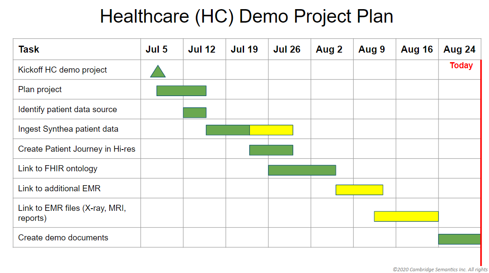
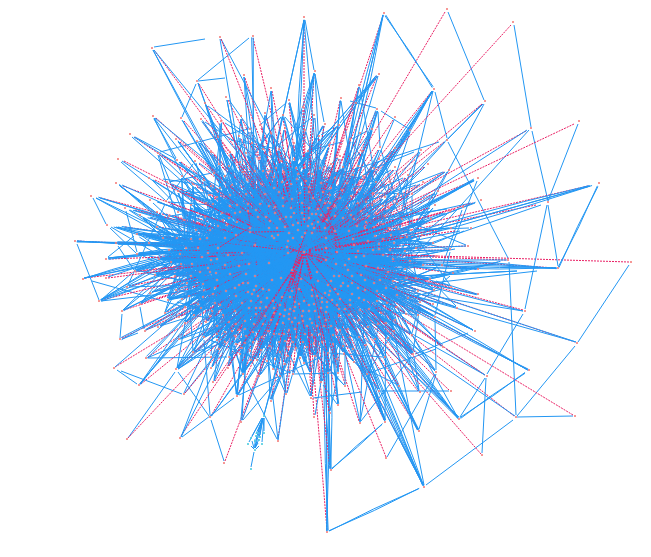
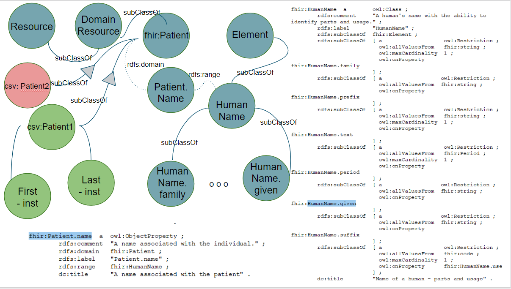
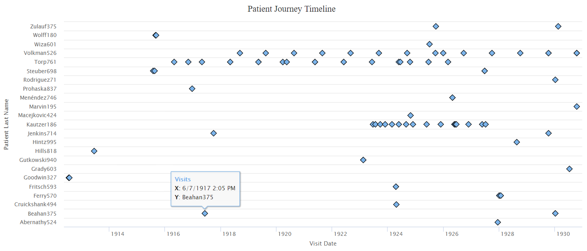

This project was the majority of my work with Cambridge Semantics. I work with Anzo to create a model that facilitates the standardization of patient records across multiple EMRS (Electronic Medical Records) used by a variety of hospitals .

The project plan.

A view of the FHIR standardized model I needed to work with.

An overview of how the different EMRs and need to link to the FHIR standardization.

The patient journey timeline that shows visit information when you click on a plot point.